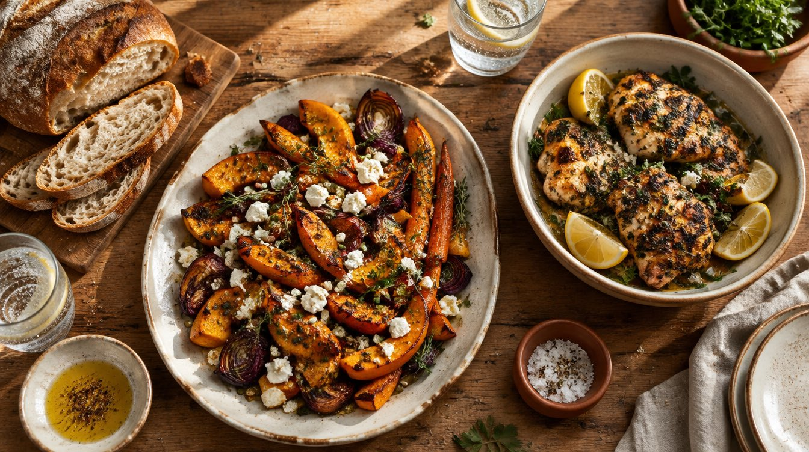
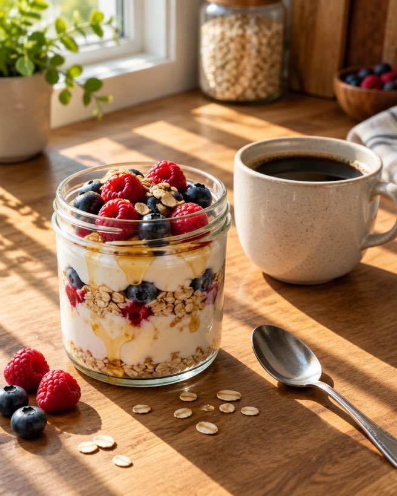
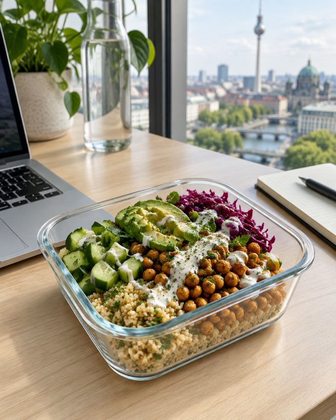
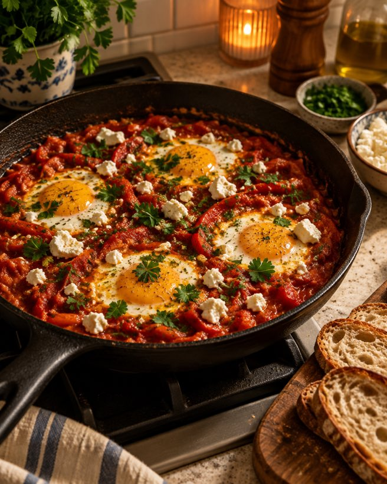
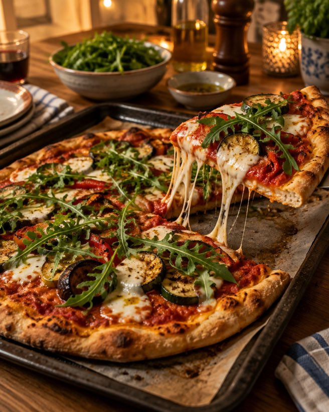
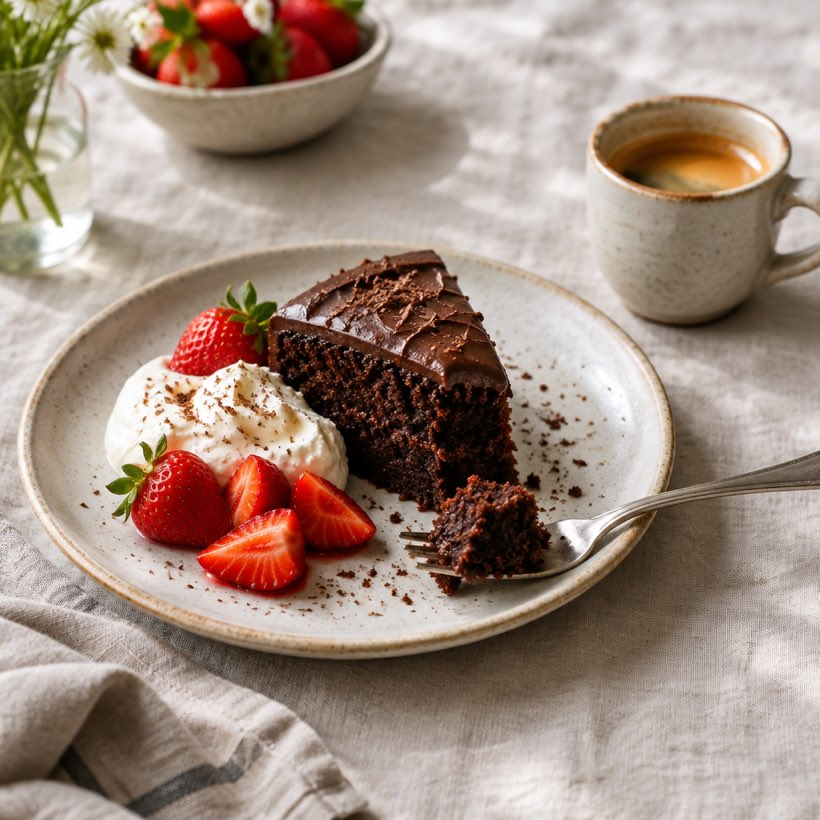
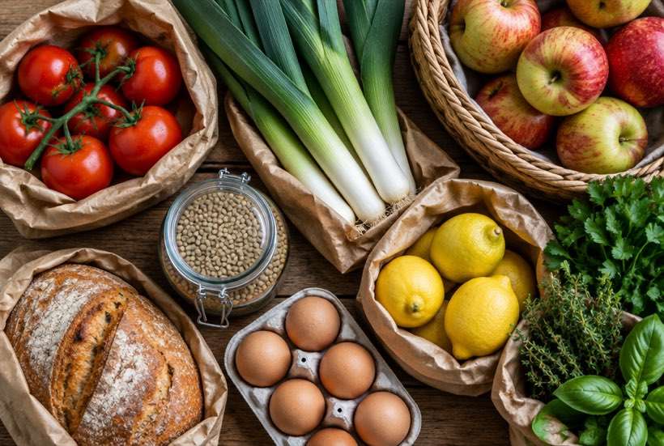
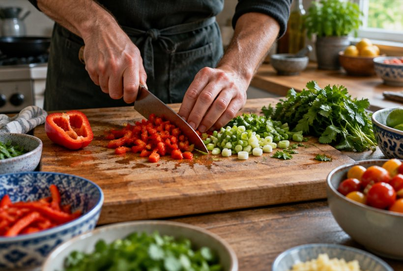

Begleitprogramm
Für alle, die über längere Zeit Unterstützung möchten.
- Ausführliches Startgespräch
- Wochenplan, der laufend angepasst wird
- Feste Check-in-Termine während der 12 Wochen

Ich bin Jonas Reiter. In meiner Ernährungsberatung in Berlin lernst du abzunehmen, ohne auf Genuss zu verzichten. Keine Verbote. Keine gestrichenen Lebensmittelgruppen. Essen, auf das du dich freust.
Kostenloses Erstgespräch vereinbaren20 Minuten, per Telefon oder Video. Unverbindlich.
Pasta am Dienstag. Pizza am Freitag. Kuchen am Sonntag. Gesund abnehmen heißt hier nicht, darauf zu verzichten.
So kann ein Ernährungsplan zum Abnehmen aussehen. Mit Gerichten, die satt machen, schmecken und in einen vollen Arbeitstag passen. Dein Plan sieht anders aus – weil er zu dir passt.

Am Vorabend vorbereitet, morgens nur noch mitnehmen.

Sonntags gekocht, für zwei Arbeitstage.

Wenig Abwasch, viel Geschmack.

Bleibt im Plan. Wir überlegen nur, wie.

Mit Genuss gegessen, nicht mit schlechtem Gewissen.
Die Gerichte sind Beispiele. Sie sind keine Diätvorschrift und kein Versprechen für ein bestimmtes Ergebnis.
Du arbeitest viel und hast wenig Zeit. Du hast schon mehrere Diäten probiert. Am Anfang hat es geklappt. Dann kam der Alltag zurück – und mit ihm das Essen, das du eigentlich magst.
Nicht das Richtige ist die Beratung, wenn du einen Plan für wenige Tage suchst oder eine medizinische Behandlung brauchst. Bei Essstörungen sind Ärztinnen, Ärzte und Psychotherapie die richtigen Ansprechpartner.
Wenn eine Diät nicht gehalten hat, liegt das selten an mangelndem Willen. Meist passt das Programm nicht zu dem Leben, das du führst. Und nicht zu dem Essen, das du magst.
Du bekommst keinen Plan aus der Schublade. Wir bauen deinen Ernährungsplan zum Abnehmen gemeinsam – aus Gerichten, die du gern isst.
Wir schauen, wie du heute isst, arbeitest und schläfst. Und was du richtig gern isst. Ohne Bewertung.
Wir legen kleine, konkrete Ziele fest. Zum Beispiel ein Frühstück, das in zehn Minuten fertig ist.
Du bekommst einen Wochenplan mit Gerichten, die dir schmecken und in deinen Tag passen. Lieblingsgerichte inklusive.
In festen Check-ins besprechen wir, was funktioniert hat und was nicht. Dann passen wir den Plan an.


Alle Angebote gibt es in der Praxis in Prenzlauer Berg und als Ernährungsberatung online per Video.
Für alle, die über längere Zeit Unterstützung möchten.
Wir lernen uns kennen. Du erzählst, wo du stehst. Ich sage dir ehrlich, ob und wie ich helfen kann.
Für eine konkrete Frage. Zum Beispiel: Was koche ich nach einem langen Arbeitstag?
Die Preise besprechen wir im Erstgespräch.
Erfahrungen von Klientinnen und Klienten zeigen wir hier erst, wenn echte Bewertungen vorliegen.
Foto folgt
Platzhalter PorträtIch bin Ernährungsberater in Prenzlauer Berg. Viele, die zu mir kommen, wissen sehr gut, was gesund ist. Schwierig ist, es im Alltag umzusetzen – ohne dass Essen zur Pflicht wird.
Daran arbeite ich mit dir. Ich frage nach deinem Tag, deinen Lieblingsgerichten und deinen Grenzen. Dann suchen wir Lösungen, die du gern umsetzt.
Das Erstgespräch dauert 20 Minuten und ist kostenlos. Du gehst damit keine Verpflichtung ein.
Erstgespräch vereinbarenJa. Es gibt keine Verbotsliste. Wir schauen, wie Lieblingsgerichte in deine Woche passen – mit Portion, Beilage und Zeitpunkt, die für dich stimmen.
Das lässt sich vorher nicht seriös sagen. Es hängt von deinem Alltag, deiner Gesundheit und vielen anderen Faktoren ab. Deshalb gibt es hier keine Versprechen in Kilo oder Wochen. Wir legen gemeinsam Ziele fest und prüfen sie regelmäßig.
Nein. Der Wochenplan richtet sich nach deiner Zeit. Wenn du abends nur zwanzig Minuten hast, planen wir mit zwanzig Minuten. Kantine und Restaurant gehören genauso dazu.
Ja. Alle Angebote gibt es auch per Video. Du brauchst einen Computer oder ein Smartphone mit Kamera. Ablauf und Inhalte sind dieselben wie in der Praxis.
Das Erstgespräch ist kostenlos. Die Preise für Einzelberatung und Begleitprogramm besprechen wir im Erstgespräch. Manche Krankenkassen bezuschussen Ernährungsberatung unter bestimmten Bedingungen. Frag dazu am besten direkt bei deiner Kasse nach.
Ja, aber sprich bitte vorher mit deiner Ärztin oder deinem Arzt. Die Ernährungsberatung ersetzt keine ärztliche Behandlung. Wenn du Medikamente nimmst, gehört das ins Erstgespräch.
Schreib mir oder ruf an. Wir finden einen Termin für dein kostenloses Erstgespräch.
Erstgespräch vereinbaren: 030 0000000